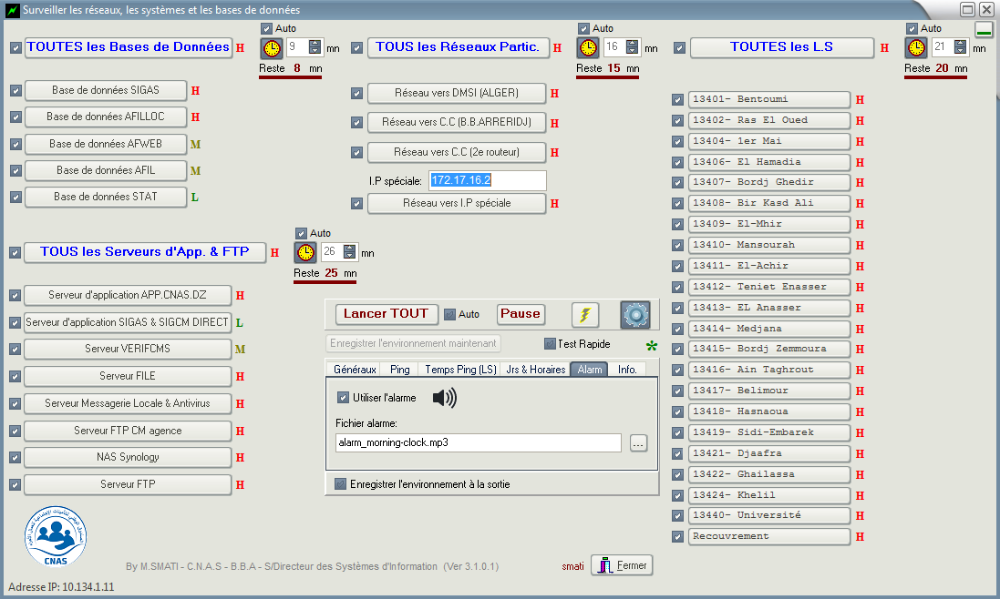
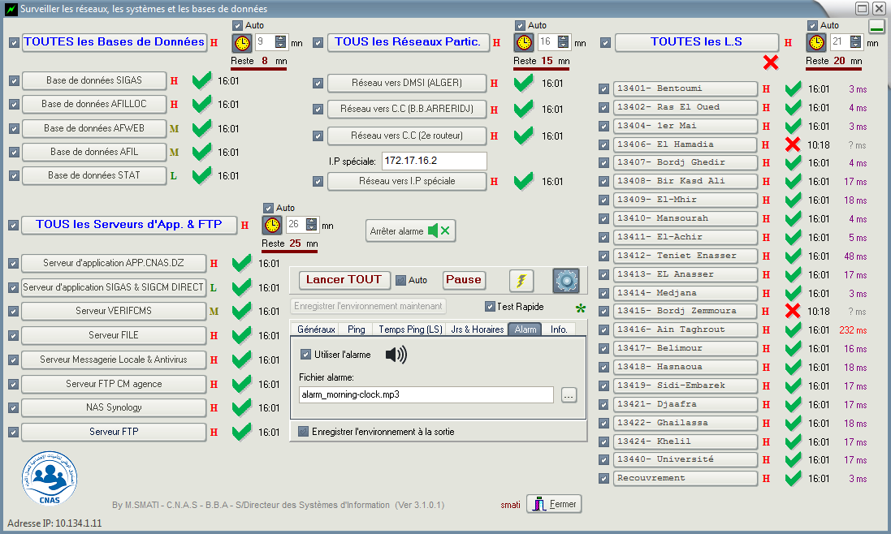

CONNECTION MONITORING
- Enables automatic monitoring (according to a frequency set by the user) of network connections (between a central structure with its distributed structures) with a view to detecting failures in order to intervene quickly. In addition, it allows to measure response times.
- It also allows to monitor the availability of databases ans servers.
Technologies used:
- Delphi (Oriented Object Pascal)

Form before connections check

Form after connections check

Others operations
- Ping a router of a connection
- Enter in router configuration using Telnet
- Calculate response time of a connection